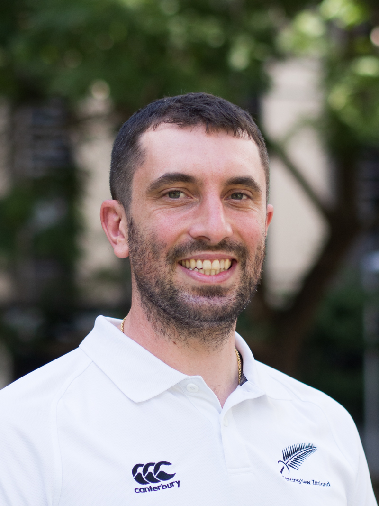
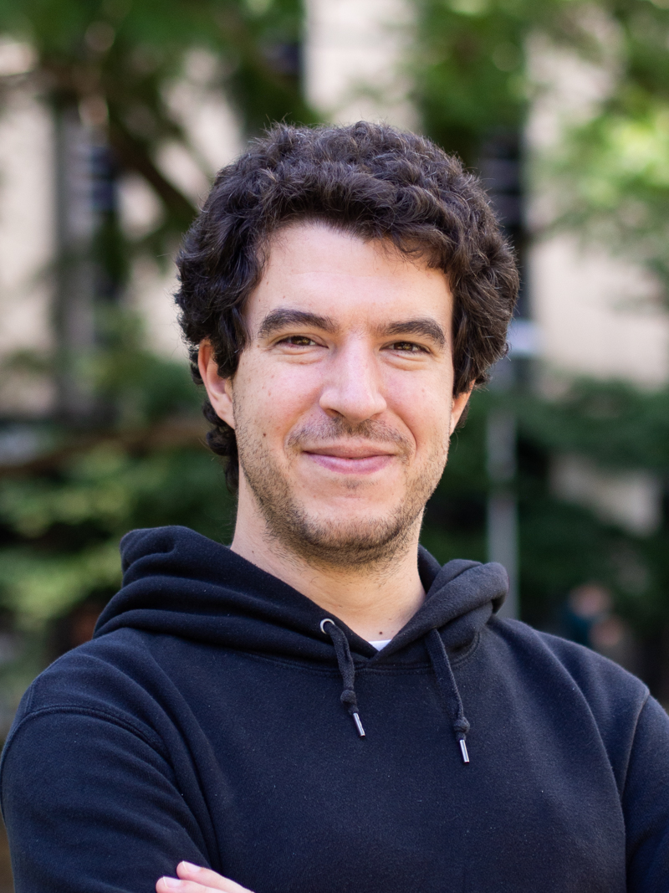
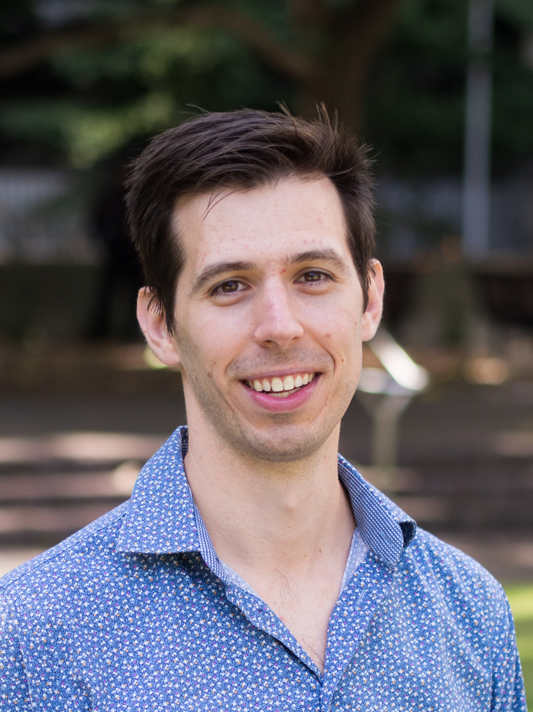
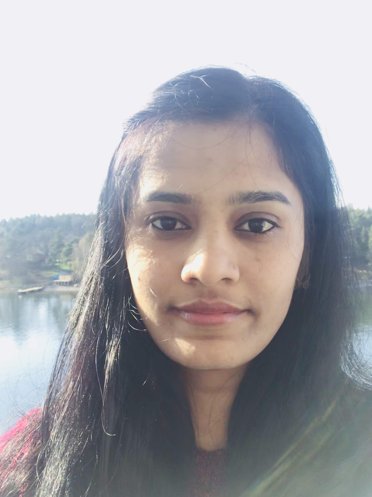
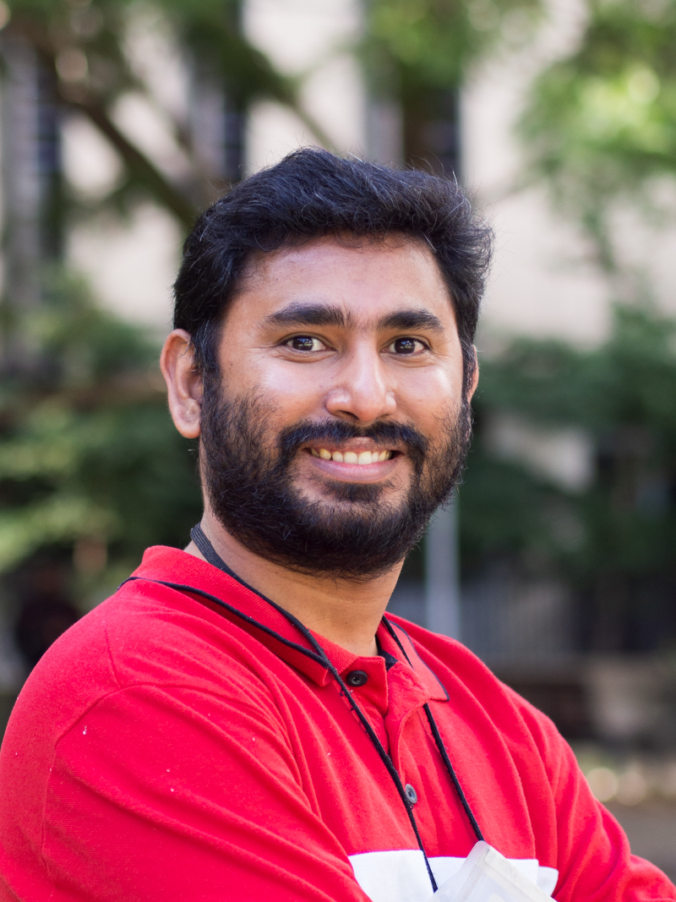
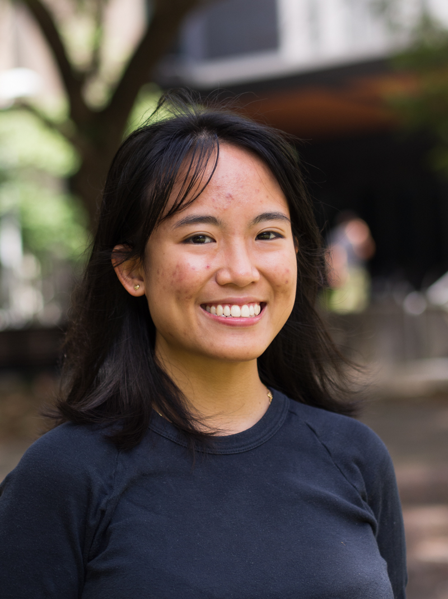
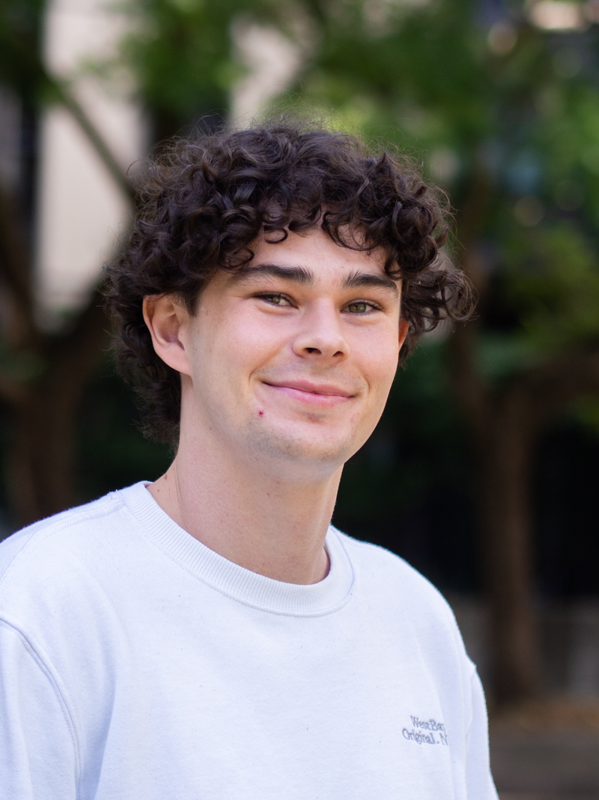
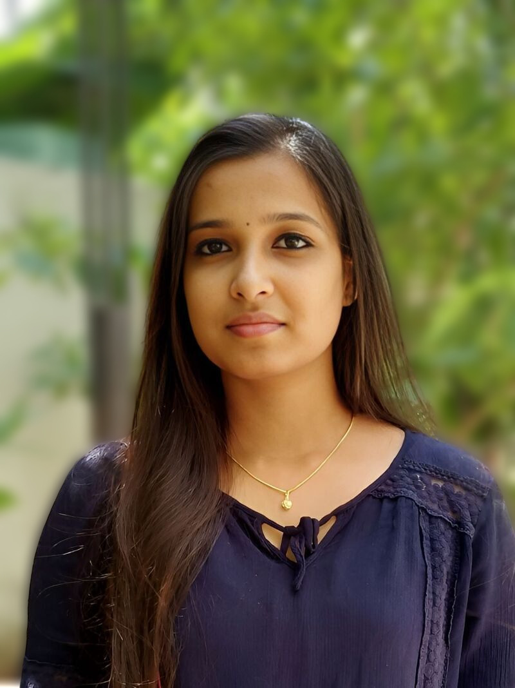
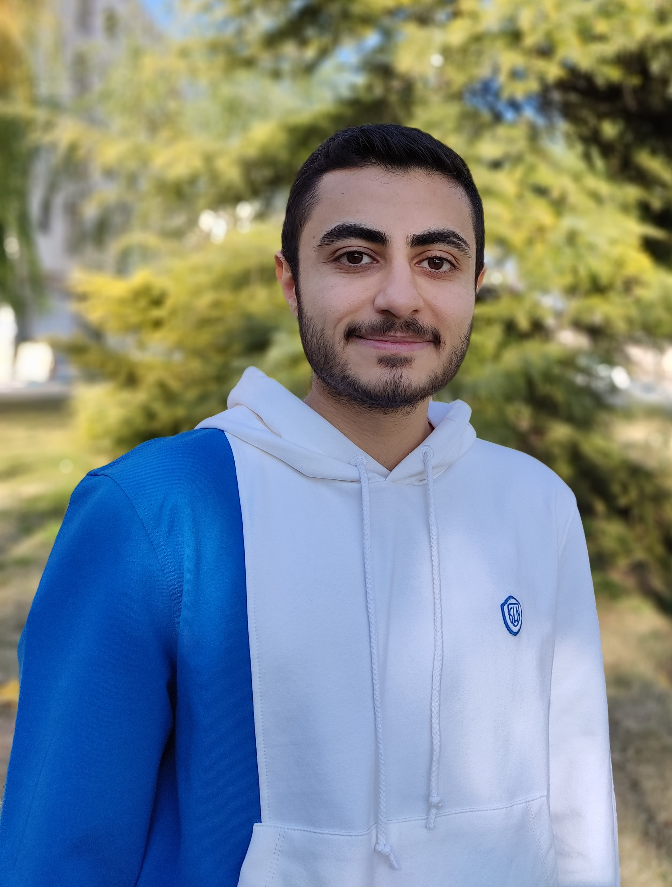

We are a research group in the School of Biotechnology and Biomolecular Science (BABS). We combine bottom-up in vitro synbio from purified proteins, lipids and DNA, with top-down genome editing of microbes. Overall, we apply biophysical methods in synthetic biology and experimental evolution to understand the origins of complex systems.
Research
We study complex systems and their origins, working among microbiology, biophysics, synthetic biology and evolutionary biology. Roughly half of us work, at the moment, on the bacterial flagellar motor. We use this as a model molecular complex to explore protein engineering, directed and experimental evolution, and to understand better how bacterial swimming has evolved and how we can push it to do new things.
Roughly the other half of us work on ‘bottom-up’ synthetic biology where we try to use insights gleaned from understanding an ancient molecular complex (the motor) to build new nanotechnologies out of simple lipid and DNA components to see how we can increase the complexity step-by-step to create new tools in biosensing and light-activation.
We welcome applications to join our group and have spaces for PhD applicants and postdocs where suitable. Please contact Matt if you are interested in joining or collaborating.
Team

Matt Baker

Matt finished an Hons in Chemistry at ANU studying Fluctuation Theorems before completing his DPhil in Physics at the University of Oxford looking at the molecular motor that makes many bacteria swim. There he first learned to love microbiology where you could work with complex living systems but also put them ‘on ice’ when you needed to. Matt started this group at the School of Biotechnology and Biomolecular Science (BABS) in 2018 as a Scientia Fellow. Matt was promoted to Scientia Senior Lecturer in 2019 and to Scientia Associate Professor in 2023. For a more detailed biography see Matt’s UNSW page or go to his linktree to listen to some recent radio.
Pietro Ridone

Pietro joined the lab in July 2019 for his first Postdoc and has since been applying genome editing and synthetic biology techniques to study the stator proteins powering the rotation of bacterial flagella. Born and bred in Florence, Italy, has been fascinated by synthetic biology since the early days of his bachelor years at the University of Glasgow (Scotland, 2008-2012) where he also joined the Glasgow iGEM team for the 2011 edition of the competition. He studied the biophysics of bacterial and human mechanosensitive channels (MscS, MscL and Piezo1) during his PhD in the lab of Prof. Boris Martinac (VCCRI, Sydney), before returning to synbio at the Baker lab. He is currently focusing on engineering the E.coli genome using CRISPR and designing artificial stators to study the evolvability of the bacterial flagellar system. When away from lab duties he can be found roaming around campus in search of strong coffees or defending a goal on the football pitches of Moore park.
Alex Mason

Alex is our resident chemistry guru, having completed his PhD in Chemistry in 2017 at UNSW Sydney, where he was focused on building an artificial mitochondria by combining polymer vesicles with purified proteins from the electron transport chain. For his first postdoc, he moved overseas to the van Hest group at the Eindhoven University of Technology (the Netherlands), to develop artificial cells made from liquid-liquid phase separated materials. He moved back to Sydney in 2021, where he is now investigating the biophysics of DNA-based functional objects (such as pores) in planar lipid membranes, with the ultimate aim to build networks of light-addressable droplets capable of signal transduction. In his spare time, Alex loves to cook, grow vegetables, go scuba diving, and hang out with his dog Rusty.
Jacob Scadden
Jacob joined the Baker lab in November 2022 after finishing his PhD at the Quadram Institute Bioscience, Norwich, UK (2018-2022) where he studied the regulation of antimicrobial peptides produced by human gut bacteria. Prior to that Jacob studied both his undergraduate degree in biomedical science (2014-2017) and his Master’s in microbiology and infection (2017-2018) at the University of Birmingham, UK. His current Postdoc is focused on ancestral sequence reconstruction of the flagellar filament proteins and its subsequent affect on bacterial motility. Outside the lab, Jacob enjoys hiking and surfing as well as cooking and reading.
Madhuri Hande

Madhuri is a postdoctoral researcher at Baker Lab UNSW. Her research focuses on DNA and lipid nanotechnology. Madhuri completed her PhD at the University of Turku, Finland as an Early-Stage Researcher in the Marie Curie Initial Training Network. She assessed Pd (II)-mediated base pairing in the duplexes. She and her group were the first to demonstrate the applicability of covalently metallated oligonucleotides as splice-switching agents. She obtained her Master’s in Organic Chemistry from the University of Pune, India. She has experience in organic, organometallic, and nucleic acid chemistry. Additionally, she has also been trained at CSIR-National Chemical Laboratory, Pune; Karolinska Institute, Sweden and RISE Research Institutes of Sweden AB (RISE), Sweden.
Md Imtiazul Islam

Imtiaz is a final year PhD student in the Baker Lab. He is from Bangladesh and is working on the ancestral sequence reconstructions of the bacterial flagellar motor, specifically the stator proteins (MotA and MotB).
Jyoti Gurung
Jyoti Prakash Gurung (2020 -2023) is a PhD candidate at University of New South Wales in the School of Biotechnology and Biomolecular Sciences under the supervision of Dr. Matthew AB Baker. He completed his Bachelor of Technology in Biotechnology from Kathmandu University, Nepal in 2013. He worked as a research fellow in Plasma Physics Laboratory, Kathmandu University to study the effect of plasma discharge in polymers and biological cells. Afterwards, he completed his Masters degree in Molecular, Nano, and Biophotonics from ENS Cachan (Paris-Saclay University), France in 2017. He worked as a research assistant in Baker Lab before joining as a PhD student in 2020. He is currently working on the application of bacterial flagellar rotation in microfluidic mixing and bio-sensing applications. Beside scientific research, he likes to travel, play soccer (big fan of Arsenal FC), and make short films.
Janelle Ramos

Janelle Ramos is a PhD student in the lab who completed Honours in 2021 looking at ancestral reconstructions of the rotor. Janelle commenced a PhD in Feb 2022 researching urinary pathogenic E. coli (UPEC) to examine sequence based diagnostics in catheter based infections.
James Gaston

James Gaston completed Honours in 2021 in the Baker Lab looking at using DNA nanotechnology to colocalise liposomes and quantify this colocalisation. He commenced a PhD in May 2022 in the Baker Lab looking at using DNA nanotechnology to control colocalisation and fusion of liposomes.
Vibhuti Nandel
Vibhuti Nandel started a PhD in March 2022 in the Baker Lab at UNSW. Her research focus is to understand the residues present in the stator complex of the Bacterial Flagellar Motor that control the efficiency of the ion binding. She likes to rejuvenate herself by reading books or following her newfound interest in painting mandalas.
Jamiema Sara Philip
 Jamiema Sara Philip will commence a PhD in our lab in May 2023. She graduated with a Bachelor of Technology in Biotechnology from the University of Kerala in India in 2017. She worked for four years as a research fellow at the Rajiv Gandhi Centre for Biotechnology, India, and then as a project scientist (Bioinformatics) at ICMR-New Delhi, India. Her research studies have primarily focused on understanding bacterial diversity and antibiotic resistance in a variety of environments using metagenomics approaches, as well as SARS-CoV-2 genome analysis. Meanwhile, she completed her Master’s degree in Bioinformatics from Bharathiar University in India in 2022.
Yara Elahi
 Yara Elahi will commence a PhD in our lab in May 2023. Yara obtained a Bachelor’s degree in Plant Sciences Biology from Kharazmi University, Tehran, Iran. Afterward, he worked on the effectiveness of bacteriophages on clinical multi-drug resistant enterococci during his Master’s thesis. When he graduated with his Master’s in Molecular and cellular Biology-Genetics from Islamic Azad University Tehran North Branch, Iran, he was employed as a research assistant focusing on enterococcal prophages and antibiotic resistance at Tehran University of Medical Sciences. He has also been a research assistant in the R&D Department of Teb Va Salamat Niki Pajouh Company, in Iran. In 2022, he was selected as an editorial board member of Primer Journal which is a subset of the Biotechnology Society of Iran. Apart from the academic side of his life, Yara is a tennis player and a music lover. You can also ask him about the world’s greatest series and movies because watching them is one of his favorite hobbies.
Alumni
Gonzalo Peralta (Hons 2016)
Dr Yu-Wen Lai (Postdoc 2017, now University of Sydney)
Jessica Clark (Hons 2018)
Oskar Jaggers (Hons 2018)
Es Darley (Hons 2019, now PhD University of Tokyo)
Joon Bae (Hons 2020)
Angela Lin (Biomedical Engineering 2020, now Children’s Cancer Research Institute)
Md Sirajul Islam (Postdoc 2022)
Imogen Kelly (Hons 2022)
Sehhaj Grewal (Computer Science & Engineering 2022, now Google)
Projects
We have the following research projects currently active in the lab and open for motivated prospective PhD students to join. Those interested in applying should consider the key dates and application process.
Project 1: The Origins of Motility.
The evolutionary origins of the bacterial flagellum have been a subject of scientific and public controversy – how can evolution produce such a complex system? We make progress on the issue by updating old phylogenetic work with new datasets and improved models and combining this with experimental evolution work being done in our lab. The project is to assemble a well-organized database of flagellar proteins and explore sequenced bacterial genomes with genome browsers and sequence-similarity searches.
Project 2: Ancestral Reconstruction of the Bacterial Flagellar Motor
 We recreate microbial ‘Jurassic Parks’ by resurrecting ancient flagellar motor componentry in contemporary hosts and measuring how well they work to let bacteria swim. This allows us to create ancient motors that have never existed in the present day to synthesise and evolve new motors as well as to learn about the process of evolution. We focus in particular on the proteins that make up the stator complex (the engine) and the filament ( (the propellor)
We recreate microbial ‘Jurassic Parks’ by resurrecting ancient flagellar motor componentry in contemporary hosts and measuring how well they work to let bacteria swim. This allows us to create ancient motors that have never existed in the present day to synthesise and evolve new motors as well as to learn about the process of evolution. We focus in particular on the proteins that make up the stator complex (the engine) and the filament ( (the propellor)
Project 3: Evolution Across Interfaces
We aim to explore how motility evolves across interfaces, when a bacterium faces a change in environment and how bacteria adapt to dwindling nutrient across such an interface. This project has scope for designing and building custom tanks to optimise bacterial evolution using 3D printing and prototyping, as well as investigating microbiology and bacterial motility in multiple dimensions using layered swim devices.
Project 4: Driving Fluidic Flows with the Bacterial Flagellar Motor
We utilise the high efficiency and self assembly of the flagellar motor to drive rotation of cells on patterned surfaces to control mixing and fluid flows in microfluidics. This project suits someone with aninterest in DIY/maker culture and the fabrication of fluidic devices to manipulate and respond to flows.
Project 5: Developing DNA-lipid nanotechnology
 We design DNA origami nanostructures that can bind and release from liposomes to direct the fusion of liposomes. We hope to apply this to trigger liposome fusion on demand using light and electrical signals. This project involves in vitro synthetic biology, DNA and lipid nanotechnologies and microscopy.
We design DNA origami nanostructures that can bind and release from liposomes to direct the fusion of liposomes. We hope to apply this to trigger liposome fusion on demand using light and electrical signals. This project involves in vitro synthetic biology, DNA and lipid nanotechnologies and microscopy.
Project 6: Signalling across membranes
We use droplet interface bilayers and droplet hydrogel bilayers to create custom membranes of any composition and then a combination of in vitro protein and DNA nanotechnology to add complexity to these systems one component at a time. We aim to make the biological equivalent of the transistor - leveraging logic gates and computational power of DNA nanotechnology with varied protein functions in our synthetic droplet systems.
Recent Papers
2023
Computer-aided diagnosis of reflectance confocal images to differentiate between lentigo maligna (LM) and atypical intraepidermal melanocytic proliferation (AIMP)
Mandal§, Priyam§, Chan, Gouveia, Guitera, Song, Baker•, Vafaee• Cancers (in press) | bioRxiv |
2022
Building programmable multicompartment artificial cells incorporating remotely activated protein channels using microfluidics and acoustic levitation
Li, Jamieson, Dimitriou, Xu, Rohde, Martinac, Baker, Drinkwater, Castell, Barrow Nature Communications | PDF | journal |
The rapid evolution of flagellar ion selectivity in experimental populations of E. coli
Ridone, Ishida, Lin, Humphreys, Giannoulatou, Sowa, Baker.
Science Advances
| PDF
| journal |
2021
Binding of DNA origami to lipids: maximizing yield and switching via strand displacement
Daljit Singh, Darley, Ridone, Gaston, Abbas, Wickham, Baker.
Nucleic Acids Research
| journal |
Fluorescence Approaches for Characterizing Ion Channels in Synthetic Bilayers
Islam, Gaston, Baker.
Membranes
| journal |
Novel Amiloride Derivatives That Inhibit Bacterial Motility across Multiple Strains and Stator Types
Islam•, Bae•, Ishida•, Ridone, Lin, Kelso, Sowa, Buckley, Baker.
Journal of Bacteriology
| journal |
Pushing the super-resolution limit: recent improvements in microscopy below the diffraction limit
Nieves, Baker.
Biochemical Society Transactions
| journal |
Flagellar export apparatus and ATP synthetase: Homology evidenced by synteny predating the Last Universal Common Ancestor
Matzke, Lin, Stone, Baker.
BioEssays
| PDF
| journal |
Preprints
Ancestral reconstruction of the MotA stator subunit eveals that conserved residues far from the pore are required to drive flagellar motility
Islam, Ridone, Lin, Michie, Matzke, Hochberg, Baker
bioRxiv
| PDF
| biorxiv |
Computer-aided diagnosis of reflectance confocal images to differentiate between lentigo maligna (LM) and atypical intraepidermal melanocytic proliferation (AIMP).
Mandal•, Priyam•, Chan, Gouveia, Guitera, Song, Baker•, Vafaee•
bioRxiv
| PDF
| biorxiv |
Earlier and other collaborative publications can be viewed on Matt’s Google Scholar.
Contact
School of Biotechnology and Biomolecular Science
Find us:
Biosciences
Room 301 (Level 3) D26
UNSW Kensington Campus
Send something:
Attention: Matt Baker
BABS
Upper Campus Store E26, Bioscience South
LG018 Loading Dock
Via Gate 11, Botany Street
UNSW Sydney NSW 2052
Australia